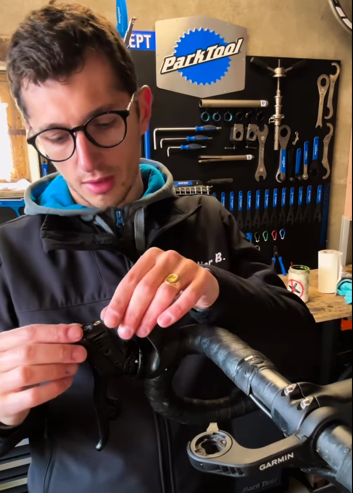

Natif de Barneville-Carteret et passionné de vélo, j'ai arpenté les sentiers de notre belle région en VTT. Après plusieurs années d'expérience professionnelle dans le domaine de la réparation vélo, je propose aujourd'hui mes services en plein cœur de la Côte des Isles.
Fils de commerçants bien connus, Benjamin ouvre son atelier de réparation de vélos
Passionné de vélo et fort de cinq années d'expérience dans la réparation cycle, Benjamin de Magondeau a lancé l'Atelier B. à Barneville-Carteret — un projet qui allie expertise technique et héritage commercial familial sur la Côte des Isles.
Lire l'article complet